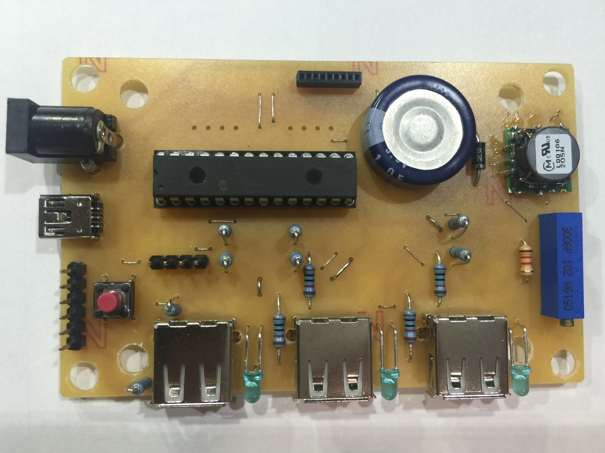
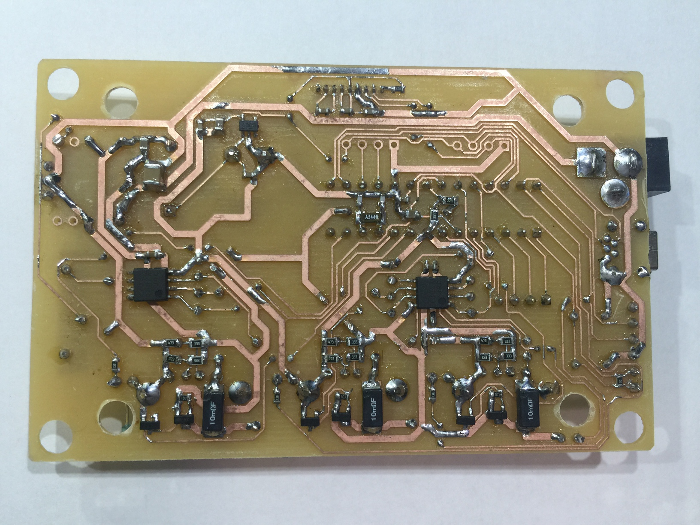
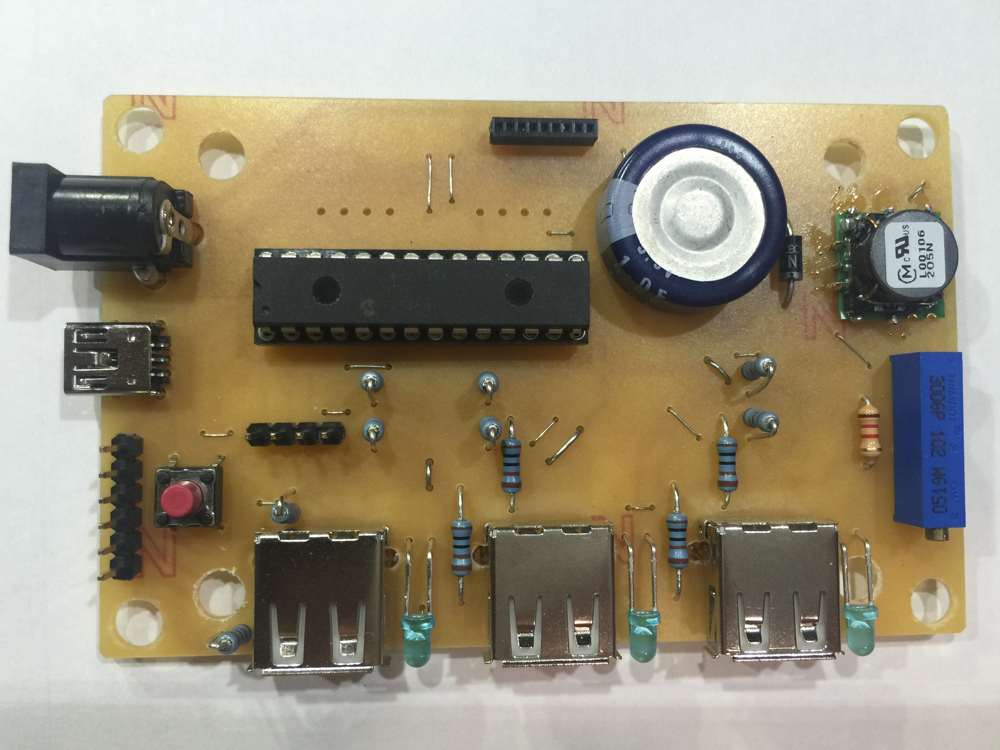
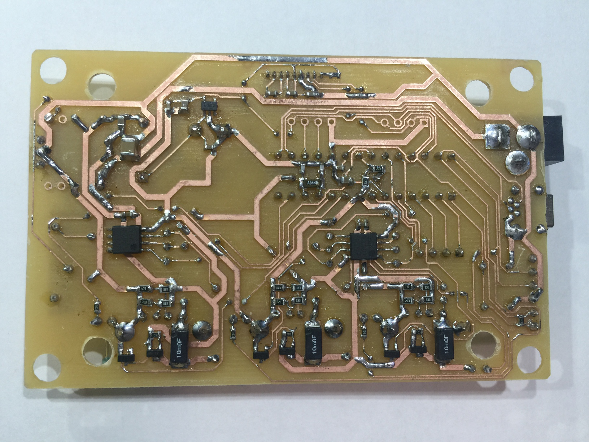

概要
ChargeStationとは自作の携帯電話充電器です。僕が命名しました。充電が終わると自動で給電を止めるので、電気の節約になります。
 



ChargeStationとは自作の携帯電話充電器です。僕が命名しました。充電が終わると自動で給電を止めるので、電気の節約になります。
ChargeStation左側面のタッチボタンを長押しすると、設定モードに入る。再度ボタンを押すと設定を終わる。ChargeStation表面の左右のボタンをセレクトボタン、真ん中のボタンを決定ボタンとして使う。設定項目は以下の通り。